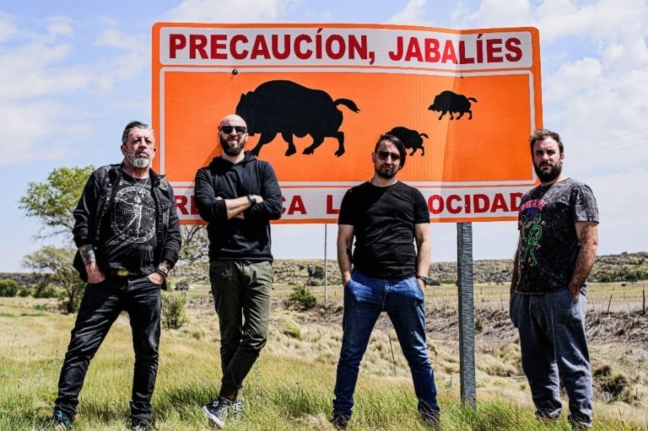

ALERTA JABALÍES
Web Oficial de la banda oriunda de Salto, Bs. As.
LETS ROCK!
 Cartel en ruta hacia
San Luis,
andaban cerca los Jabalí al parecer...
 Altas cumbres, Córdoba,
emprendiendo la vuelta de la
gira por Salto, La Rioja capital y Chepes. Parada obligatoria para retratar esa vista.
Altas cumbres, Córdoba,
emprendiendo la vuelta de la
gira por Salto, La Rioja capital y Chepes. Parada obligatoria para retratar esa vista.
 Fecha enero 2021, La
Quadra Bar (del legendario Walter Meza de Horcas), tuvimos el honor de presentarnos por
primera vez ahí. Un inicio a todo motor y con la compañía de "Soster", gran banda amiga.
Fecha enero 2021, La
Quadra Bar (del legendario Walter Meza de Horcas), tuvimos el honor de presentarnos por
primera vez ahí. Un inicio a todo motor y con la compañía de "Soster", gran banda amiga.
 Grabación del video
"Maestro del Mal" en la Sociedad Italiana "Humberto Primo" de Salto. Hermoso lugar para
plasmar la imagen de banda en lo que sería el primer videoclip de la banda.
Grabación del video
"Maestro del Mal" en la Sociedad Italiana "Humberto Primo" de Salto. Hermoso lugar para
plasmar la imagen de banda en lo que sería el primer videoclip de la banda.